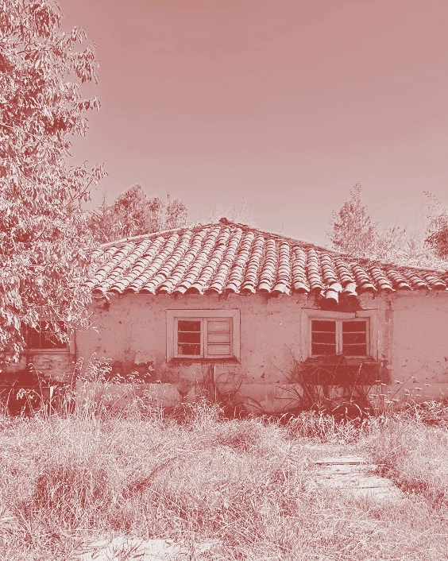

Museo de la vida rural y campesina El Canario
Bienvenidos a la página del Museo de la vida rural El Canario, donde podrá saber un poco más de la casa, la historia y sus objetos.
Pudiendo adentrarse en lo que podrá encontrar en su visita, a través de ilustraciones del lugar, que le harán recorrer por los objetos que alguna vez fueron parte de nuestra historia.
RECORRER